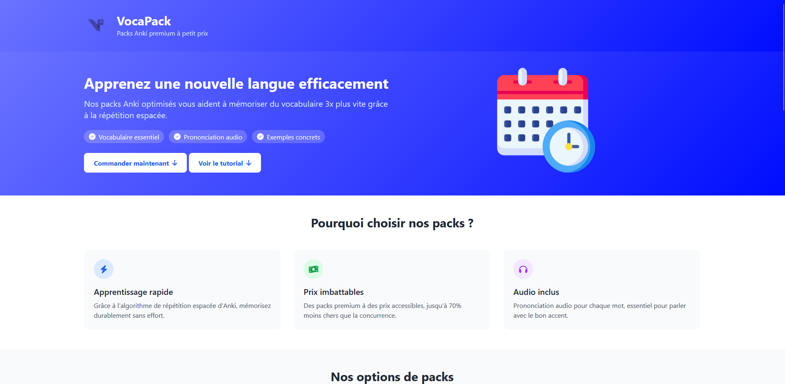
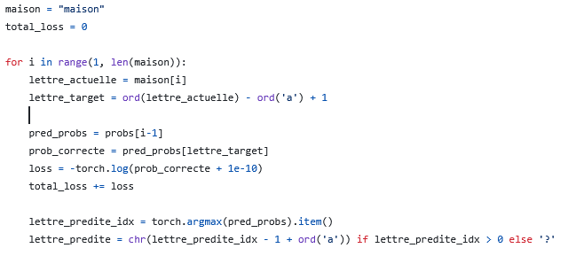
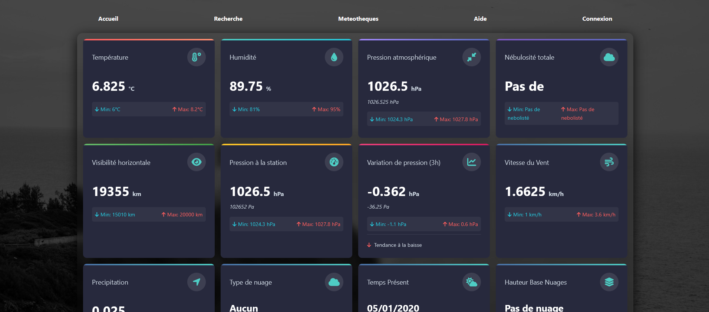
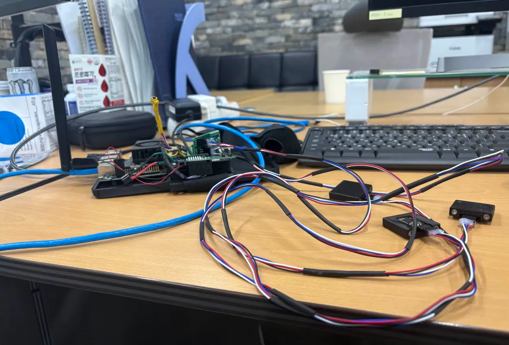
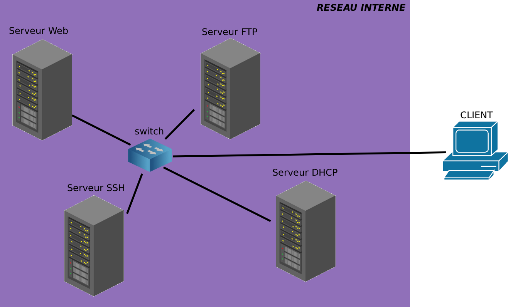
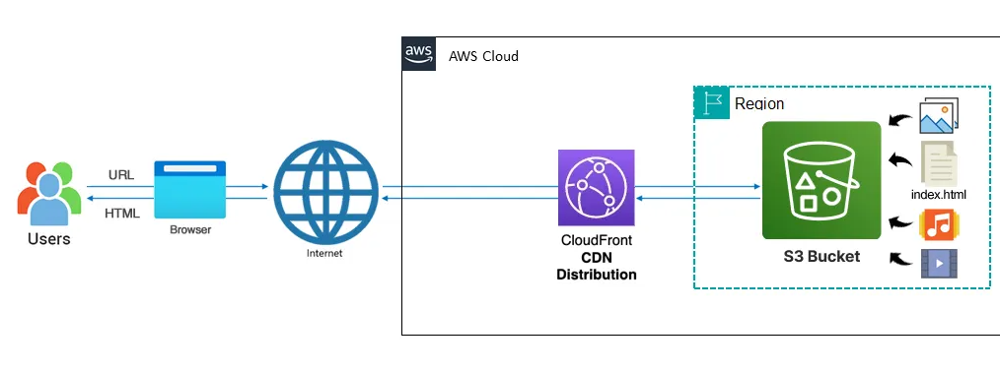

Découvrez mes réalisations et expériences professionnelles
Ces projets sont présentés en adéquation avec les apprentissages critiques attendus en 3ème année de BUT Informatique : réaliser un développement d'application (C1), optimiser des applications (C2) et collaborer au sein d'une équipe informatique (C6), ainsi que certains apprentissages critiques des années précédentes.

Conception et développement d'une plateforme web de distribution de packs Anki multilingues.
L'architecture sépare la logique métier (Python côté serveur) de l'interface statique
(HTML/CSS/JS), permettant de gérer plus de 50 combinaisons de langues sans dupliquer
le code de traitement. Chaque module de génération est indépendant, facilitant
l'ajout de nouvelles langues sans toucher au cœur de l'application.
Hébergé sur Render : vocapack-static.onrender.com

Implémentation d'un transformer depuis zéro pour analyser le comportement réel d'un LLM à chaque étape : évolution de la loss au fil des epochs, occupation mémoire des matrices d'attention, temps de calcul des opérations tensorielles. PyTorch a été choisi pour sa capacité à exposer les gradients et faciliter le débogage couche par couche ; NumPy pour les manipulations matricielles initiales. L'objectif n'était pas un produit fini, mais une compréhension profonde du comportement du modèle de bout en bout.

Application météorologique construite autour d'une architecture PHP/MySQL justifiée par la nature des données : collecte cyclique via l'API Synop, stockage relationnel pour les requêtes historiques, rendu serveur pour les statistiques agrégées. Le système calcule des métriques en temps réel (températures, pressions, humidités sur des fenêtres glissantes) et visualise les tendances via Chart.js.

Interface de monitoring temps réel pour le laboratoire ExoLab de KAIST (Corée du Sud), développée en équipe de 4. L'architecture (PyQt5 avec threading dédié aux capteurs) répond à une contrainte forte : traiter les flux EMG et IMU à haute fréquence sans geler l'interface graphique, en maintenant une latence d'affichage dans les seuils requis. L'application assure la visualisation en direct, l'enregistrement de sessions avec métadonnées horodatées et l'export pour analyses post-session. La répartition des tâches et le suivi d'avancement au sein de l'équipe ont été gérés collectivement avec le responsable du laboratoire.

Déploiement et configuration d'une infrastructure réseau complète sur Debian en binôme, intégrant Web (Apache), SSH, FTP/SFTP et DHCP en environnement local. Les scripts Bash/Batch développés analysent le comportement du système : validation de configuration Apache avant application, rollback automatique si une anomalie est détectée, rotation des sauvegardes avec nettoyage des exécutions obsolètes. Cette approche permet d'observer et de justifier chaque changement d'état avant de le rendre effectif. La répartition des rôles au sein du binôme a permis une livraison complète et testée.

Déploiement d’un site statistique accessible publiquement via une architecture cloud AWS : S3 pour l’hébergement statique (coût minimal, disponibilité automatique) et CloudFront comme CDN mondial pour réduire la latence de distribution. Ce choix reflète une analyse des enjeux cloud actuels — scalabilité à la demande, distribution géographique des contenus, sécurité renforcée via HTTPS imposé par CloudFront — sans infrastructure serveur à maintenir.
Veille active sur l'écosystème AWS — EC2, S3, Lambda, RDS, CloudFront — en suivant l'évolution des services et leurs cas d'usage concrets. La préparation à la certification AWS Cloud Practitioner structure cette veille autour des enjeux économiques du cloud : modèles de facturation, responsabilité partagée, et choix des services adaptés à chaque contrainte.
Compréhension bas niveau des architectures modernes : implémentation d'embeddings, mécanisme d'attention multi-tête, couches feed-forward et projection de sortie. En parallèle, exploration des algorithmes classiques (régression, classification, réseaux de neurones, NLP) et étude comparative de TensorFlow vs. PyTorch selon les usages (déploiement vs. recherche).
Apprentissage des pratiques orientées production : conteneurisation Docker (images légères, multi-stage builds), intégration et déploiement continus via GitLab CI et GitHub Actions. Proxmox et VirtualBox permettent de simuler des environnements réalistes avant mise en production réelle. Cette veille nourrit directement les décisions d'architecture d'infrastructure dans les projets.
Veille sécurité structurée autour de l’analyse des protocoles réseau (TCP/IP, trames Wireshark) et de la pratique sur des plateformes d’entraînement (RootMe). Ces challenges révèlent les surfaces d’attaque réelles des applications et systèmes — une connaissance directement utile pour sécuriser les architectures développées par ailleurs.